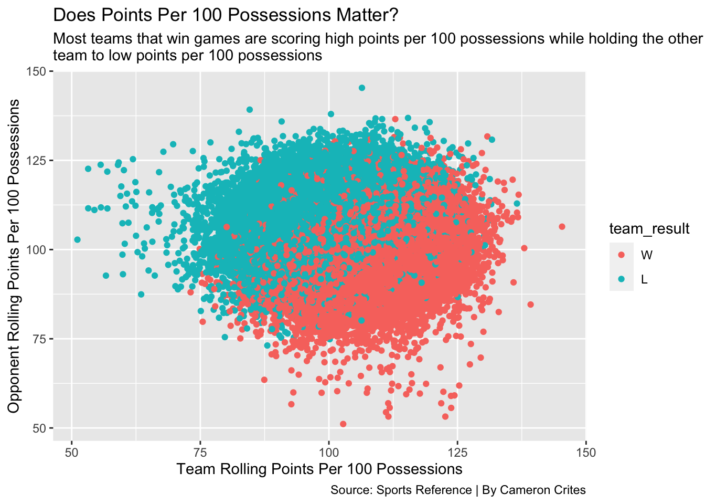
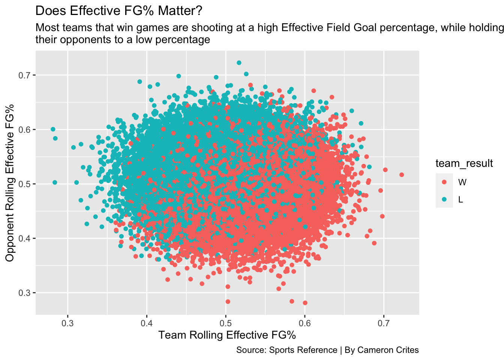

College basketball can be looked at in many different ways…
Some use advanced data to analyze the “ins” and “outs” of the game, while some stick to the “eye test” to determine how to predict contests.
This year for the NCAA Tournament, I decided to go the advanced analytics route to try and use machine learning to help me predict March Madness. With that being said, I wanted to emphasize a part of the game that I’ve always felt separate the “good” teams from the “great teams.”
Efficiency.
Yes, efficiency has always been the clear difference maker in my eyes to tell how well a team will do in the tournament. If you can protect the ball and shoot at an efficient percentage, you should set yourself up for success. This being because of course you’re making the most out of every possession. Something that only the “great” teams can do.The specific stats I chose to emphasize efficiency are ones that I felt had a great impact on the game.
Beginning with Free Throw Rate, which is how often you are getting to the free throw line compared to shooting a field goal, I was surprised to notice that there wasn’t a huge difference in whether teams were winning or losing based on that statistic.
The next statistic I chose was one that most models account for, and that is Points Per Possession.
Code
ggplot() +geom_point(data=modelgames, aes(x=team_rolling_ppp, y=opponent_rolling_ppp, color=team_result)) +labs(y ="Opponent Rolling Points Per 100 Possessions",x ="Team Rolling Points Per 100 Possessions",title="Does Points Per 100 Possessions Matter?", subtitle="Most teams that win games are scoring high points per 100 possessions while holding the other\nteam to low points per 100 possessions", caption="Source: Sports Reference | By Cameron Crites" )
As seen above, Points Per Possession is crucial to being an efficient team and winning games, and even though that might seem obvious, since you’d like to score more than the other team, it’s crazy how the chart is basically split in half for wins and losses based on how many points a team is scoring per 100 possessions.
The next statistic that I heavily relied on was Effective Field Goal Percentage, being a stat that takes field goal percentage and adjusts it to make three-pointers worth more than two-pointers.
Code
ggplot() +geom_point(data=modelgames, aes(x=team_rolling_effective_fga, y=opponent_rolling_effective_fga, color=team_result)) +labs(y ="Opponent Rolling Effective FG%",x ="Team Rolling Effective FG%",title="Does Effective FG% Matter?", subtitle="Most teams that win games are shooting at a high Effective Field Goal percentage, while holding\ntheir opponents to a low percentage", caption="Source: Sports Reference | By Cameron Crites" )

As seen above, once again an efficiency statistic seems to have a great say in whether a team will win or lose. A high Effective Field Goal Percentage is often resulting in wins, and similar to Points Per 100 Possessions, a split can be seen down the middle in wins vs. losses.
The last major statistic used to emphasize efficiency in this model is Assist/Turnover Ratio, being how many assists you’re recording per times turning over the basketball. Obviously, turnovers are not efficient since that means you’re not getting a shot on the basket, so this stat means a lot for a teams efficiency level every game.
Code
ggplot() +geom_point(data=modelgames, aes(x=team_rolling_atr, y=opponent_rolling_atr, color=team_result)) +labs(y ="Opponent Rolling Assist/Turnover Ratio",x ="Team Rolling Assist/Turnover Ratio",title="Does Assist/Turnover Ratio Matter?", subtitle="Most teams that win games are recording many assists without turning the ball over", caption="Source: Sports Reference | By Cameron Crites")

Once again, we see a disparity between teams winning and losing games based on if they’re being efficient, with this case being assisting on a basket vs. turning the ball over. Although this graph may not be as consistent as the other statistical measurements, there’s not doubt it could still be useful in the model ran.
So with all of this being said, how did the model run? Did the efficiency categories we determined to be important help predict who would win in the NCAA Tournament?
Not really.
Attached below is photos of what my efficiency model predicted.
Yikes. Doesn’t look great, I know. However, there are some positive takeaways from this!
For one, my model predicted Furman to win the National Championship! Now, obviously they didn’t do that, and in fact, they only won one game, but they did defeat Virginia in a major upset in the first round. And why did they defeat Virginia? Because of a crucial turnover by Virginia in the final seconds to which Furman capitalized. Did my model predict that? Probably not, but it certainly knew about the difference in efficiency between the two teams, which turned out to be the deciding factor as to why Virginia lost.
So overall, does efficiency matter?
I would say it does. If you look closely into my bracket there are some games(especially late in the tournament) in which my model made the right choice and efficiency turned out to be a big deal, but ultimately, the main thing I’m missing here is some way of differentiating strength of schedule for teams. A team like Furman could be ultra-efficient because they haven’t played anyone to the level of the teams they played in the tournament, and for those games efficiency may not matter as much when there’s a severe difference in talent.
So next time, I would want to find a way to consider strength of schedule while emphasizing efficiency, and I got a really good feeling that I could make a model that predicts the NCAA Tournament very accurately.